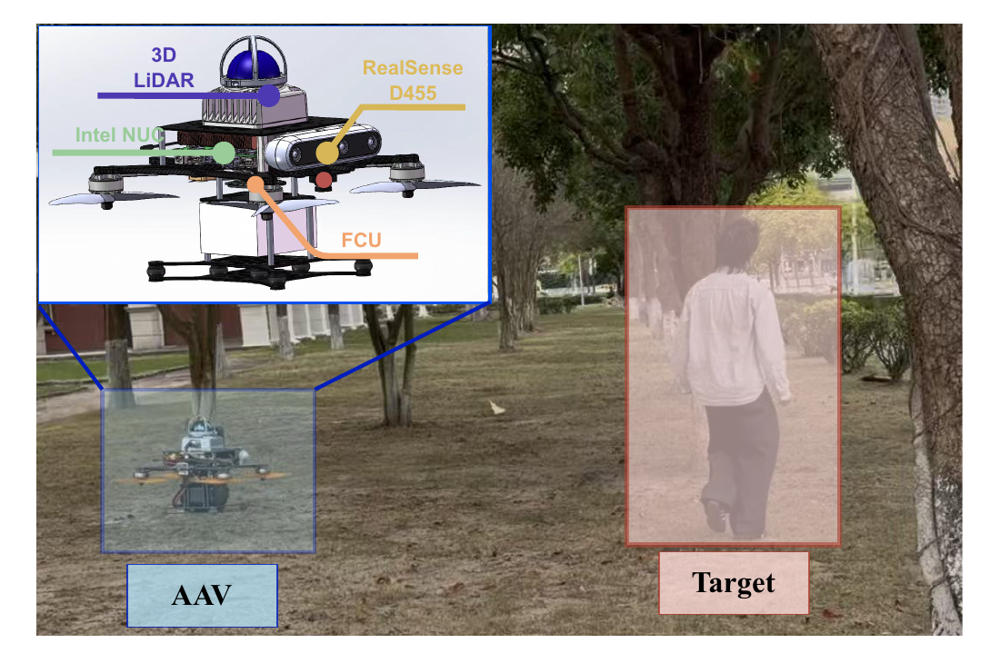
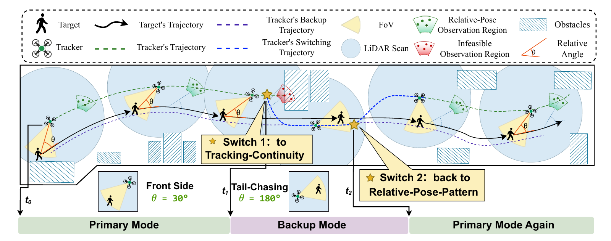

杜兆丰 （Zhaofeng Du）
无人机目标跟踪 · 目标状态估计 · 运动规划 · 多机协同
RESEARCH
研究工作

RAFT 相对位姿感知目标跟踪
兼顾跟踪连续性与期望观测构型的柔性无人机跟踪规划。
FROM ALGORITHMS TO FLIGHT
无人机实物平台
自己动手搭建，让算法在真实环境中飞起来。
点击照片，可放大查看。
BACKGROUND
教育经历
- 2024.09 – 至今
控制科学与工程 · 博士（硕博连读）
北京理工大学
博士生导师：陈晨教授（国家优青）· 预计 2028 年毕业 - 2022.09 – 2024.06
控制工程 · 硕士阶段
北京理工大学
硕士生导师：辛斌教授（国家杰青） - 2018.09 – 2022.06
自动化 · 本科
北京理工大学
HONOURS
荣誉与奖励
- IROS 空中自主挑战赛一等奖
- 无人飞行器智能感知技术竞赛 · 线下赛一等奖
- 智能无人系统应用挑战赛 · 飞行避障科目一等奖
- 智能无人系统应用挑战赛 · 空地协同科目一等奖
其他荣誉
- 2024 · 智能无人系统应用挑战赛飞行避障科目，三等奖
- 2023 · 大疆「智在飞翔」无人机竞赛线上赛、全国赛，三等奖
- 2018 年北京理工大学新生奖学金、多次学业奖学金
LET'S CONNECT
欢迎交流
关于科研、机器人、骑行，或一张喜欢的唱片。